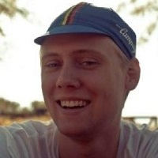

Möt oss
Fredrik
CEO

Douglas
Utvecklare

Daniel
Utvecklare
Per
Utvecklare
För att kunna erbjuda allra bästa kundnytta har vi på Keep specialiserat oss på mobila lösningar. I allt högre grad rör vi oss över till mobila enheter och att alltid vara uppkopplad har blivit en självklarhet. Vi hjälper våra kunder hitta rätt mobil-lösning till just deras behov. Där fokus alltid ligger på skalbarhet, användarvänlighet, tillgänglighet samt integrerade lösningar.
Keep har vass spetskompetens inom systemutveckling. På Keep jobbar vi med nyutveckling såväl som vidareutveckling av system. Vår breda branscherfarenhet och vår djupa tekniska kompetens blir ett värdefullt tillskott för våra kunder, där vi alltid strävar efter att kompetens-överföra vår kunskap till kundernas befintliga team.
CEO
Utvecklare
Utvecklare
Utvecklare
Besöksadress
Regementsgatan 8
211 42 Malmö
Adress
Henset 7357
249 91 Hörby